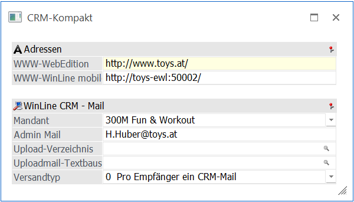
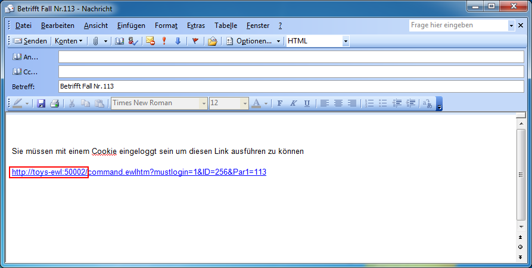
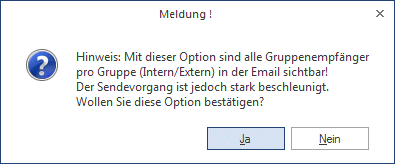

Wenn nur WinLine CRM im Einsatz ist (ohne WinLine WEB Edition), können hier einige Einstellungen für die Funktionalität des CRMs vorgenommen werden.

Ø WWW-Adresse
Geben Sie hier die WWW-Adresse an, mit welcher die WEBEdition von extern angesurft werden kann. Diese Information wird z.B. im WinLine INFO benötigt, um auf gewisse Daten zugreifen zu können.
Weiters muss hier ein Eintrag erfolgen wenn Workflows oder Aktionsschritte aus dem Belegerfassen angestoßen werden sollen!
Hinweis
Die Adresse muss mit "http" beginnen, ansonsten erfolgt eine Fehlermeldung bzw. ist die Eingabe ungültig.
Auch wenn sich keine WEBEdition im Einsatz befinden sollte, muss das Feld "WWW-Adresse" mit einem Eintrag versehen sein. Ab Version 10.1 wird beim Speichern des Menüpunktes der Eintrag http://localhost/ automatisch gesetzt.
Ø EWL-WWW-Adresse
In der Fallansicht eines CRM-Falls kann mit Hilfe des Buttons "Mail zum Fall" eine E-Mail erstellt werden, in welcher automatisch ein EWL-Link integriert ist. Damit dieser Link korrekt erstellt wird, kann an dieser Stelle die WWW-Adresse des EWL-Servers hinterlegt werden.
Beispiel
Die EWL ist unter der Adresse "http://toys-ewl:50002" zu erreichen und entsprechend unter "CRM-Kompakt" im Feld "EWL-WWW-Adresse" eingetragen worden.
Wenn nun aus einem CRM-Fall eine E-Mail über den Button "Mail zum Fall" generiert wird, dann erscheint in der Mail folgender EWL-Link:

Ø Mandant
An dieser Stelle wird der Mandant hinterlegt, für welchen die nachfolgenden Einstellungen gelten und entsprechend gespeichert werden sollen.
Ø Admin Mail
An dieser Stelle kann die E-Mailadresse des Administrators eingetragen werden.
Ø Upload-Verzeichnis
Als Upload-Verzeichnis kann ein solches angegeben werden, in welchesdas in weiterer Folge jene Dateien gespeichert werden, die zu einem "Workflow" (Fall) eingetragen/upgeloaded werden.
Dazu wird im angegebenen Verzeichnis ein Unterverzeichnis mit der Nummer des Falles erstellt. Alle zum Fall hinzugefügten Dateien werden dann in diesem Verzeichnis gespeichert.
Hinweis
Wird hier kein Verzeichnis angegeben, so wird als "Root-Verzeichnis" das WinLine-Verzeichnis herangezogen, und darunter das angesprochene Unterverzeichnis erstellt.
Ø Uploadmail-Textbaustein
Im Eingabefeld "Uploadmail-Textbaustein" kann ein Textbaustein hinterlegt werden, der im Falle eines Uploads an interne Benutzer verschickt wird.
Hinweis
Um nach Textbausteinen zu suchen, steht der Textbaustein-Matchcode zur Verfügung.
Ø Versandtyp
Durch die Auswahl des Versandtyps kann gesteuert werden, ob pro CRM-Mail ein eigenes Mail pro Benutzer versendet werden soll, oder ein CRM-Mail pro interne oder externe Gruppe
¨ 0 Pro Empfänger ein CRM-Mail: mit dieser Einstellung (Standardeinstellung) wird pro Empfänger ein CRM-Mail versendet.
¨ 1 Pro Gruppe (intern/extern) ein CRM-Mail: bei Verwendung dieser Einstellung werden die Empfänger der CRM-Mails pro Gruppe in ein Mail zusammengefasst. Für "interne" Benutzer wird ein eigenes Mail erzeugt, und der hinterlegte Textbaustein "intern" verwendet, und ebenso für "externe" Benutzer (inkl. Textbaustein "extern"). Wird diese Option gewählt, so wird in einem entsprechenden Hinweis angezeigt, dass pro Mail alle Mailempfänger sichtbar sind!
